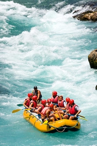
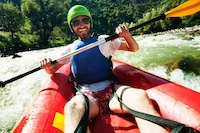
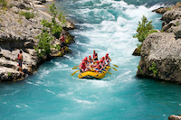
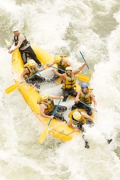
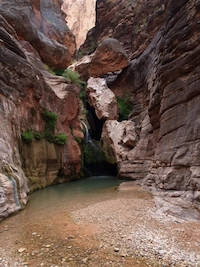
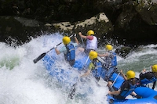
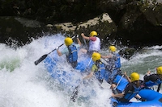

White water rafting is a thrilling and exciting sport that takes place on a river. Rafters navigate the river in a rubber raft, working together to steer the raft and avoid obstacles. White water rafting can be a fun and challenging activity for people of all ages and skill levels. Whether you are a beginner or an experienced rafter, there is a trip that is perfect for you. So come join us for an adventure on the river!


White Water Rafting
History
White water rafting has been around for centuries, with evidence of early rafts dating back to ancient times. The sport has evolved over the years, with modern rafts made of durable materials like rubber and plastic. Today, white water rafting is a popular recreational activity enjoyed by people all over the world. Rafting trips are available on rivers of all sizes and difficulty levels, from gentle floats to adrenaline-pumping rapids.
Adventure Awaits You!
   

Are you ready to experience the thrill of white water rafting? Whether you are a beginner or an experienced rafter, there is a trip that is perfect for you. Our experienced guides will help you navigate the river safely and have a great time. So come join us for an adventure on the river!